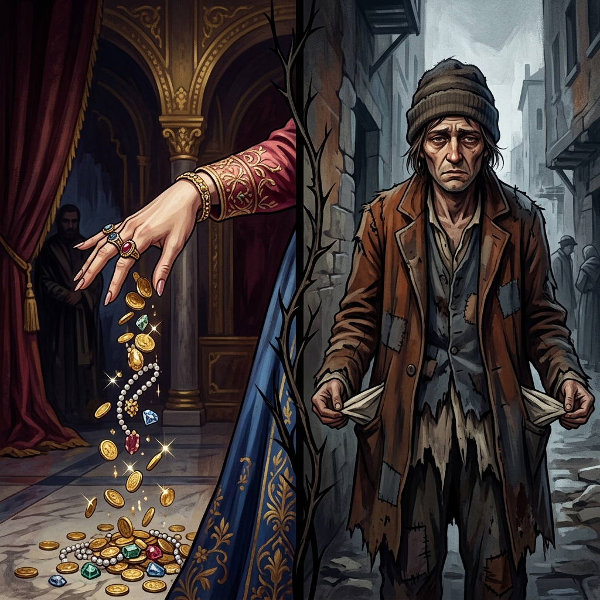
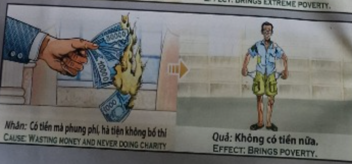

El Derroche sin CaridadWaste without CharityRifiuti senza Carità没有慈善的浪费تبذير بلا صدقةРасточительство без благотворительностиVerschwendung ohne NächstenliebeGaspillage sans charité慈善活動のない無駄遣いDesperdício sem caridadeLãng phí mà không có từ thiện
Quien quema su riqueza en la hoguera de la vanidad y niega su mano al necesitado, despierta con los bolsillos vacíos en el invierno de la vida. He who burns his wealth in the bonfire of vanity and denies his hand to the needy, wakes up with empty pockets in the winter of life. Chi brucia le sue ricchezze nel rogo della vanità e nega la mano al bisognoso, si risveglia con le tasche vuote nell'inverno della vita. 那些在虚荣的篝火中烧毁自己的财富、拒绝向有需要的人伸出援助之手的人，在生命的冬天醒来时，口袋空空。 من أحرق ثروته في نار الغرور، وأبعد يده عن المحتاجين، استيقظ بجيوب فارغة في شتاء الحياة. Тот, кто сжигает свое богатство на костре тщеславия и отказывает в помощи нуждающимся, просыпается с пустыми карманами зимой жизни. Wer seinen Reichtum im Scheiterhaufen der Eitelkeit verbrennt und den Bedürftigen seine Hand verweigert, wacht im Winter des Lebens mit leeren Taschen auf. Celui qui brûle ses richesses dans le feu de la vanité et refuse sa main aux nécessiteux se réveille les poches vides pendant l'hiver de la vie. 虚栄心のたき火で富を燃やし、貧しい人々に手を貸さない人は、人生の冬に目を覚ますとポケットが空になります。 Aquele que queima a sua riqueza na fogueira da vaidade e nega a sua mão aos necessitados, acorda com os bolsos vazios no inverno da vida. Kẻ đốt cháy của cải trong đống lửa phù phiếm và từ chối giúp đỡ người túng thiếu, sẽ thức dậy với túi rỗng trong mùa đông cuộc đời.
Entre los múltiples rostros de la abundancia, existe una prueba silenciosa que muchos fracasan en advertir. El dinero y los recursos no son propiedades eternas, sino energía prestada por el universo para ser administrada. Quien convierte esa energía en humo, quemando su fortuna en el altar del lujo desmedido y la ostentación banal, está firmando una sentencia de escasez.
Más grave aún es el peso de la avaricia frente al dolor ajeno. Mientras las monedas se desvanecen en caprichos efímeros, la mirada se vuelve de piedra ante las manos extendidas del hambre y la necesidad. Cerrar el corazón a la caridad cuando los graneros están llenos es estancar el río de la vida hasta convertirlo en un pantano seco.
La ley kármica establece un equilibrio insobornable: el universo arrebata aquello que no se sabe valorar ni compartir. En la próxima vuelta de la rueda, el alma que derrochó sin piedad renacerá en el extremo opuesto del espectro. Sus bolsillos estarán agujereados, la miseria será su constante sombra, y la opulencia que una vez despreció se convertirá en un doloroso espejismo frente a la pobreza más absoluta.
Among the many faces of abundance, there is a silent proof that many fail to notice. Money and resources are not eternal properties, but energy borrowed from the universe to be managed. Whoever turns that energy into smoke, burning their fortune on the altar of excessive luxury and banal ostentation, is signing a sentence of scarcity.
Even more serious is the weight of greed in the face of other people's pain. While coins fade into ephemeral whims, the gaze turns to stone before the outstretched hands of hunger and need. To close the heart to charity when the barns are full is to stagnate the river of life until it becomes a dry swamp.
Karmic law establishes an incorruptible balance: the universe snatches that which it does not know how to value or share. At the next turn of the wheel, the soul that was ruthlessly squandered will be reborn at the opposite end of the spectrum. His pockets will be full of holes, misery will be his constant shadow, and the opulence he once despised will become a painful mirage in the face of the most absolute poverty.
Tra i tanti volti dell’abbondanza, c’è una prova silenziosa che molti non riescono a notare. Il denaro e le risorse non sono proprietà eterne, ma energia presa in prestito dall'universo per essere gestita. Chi trasforma quell'energia in fumo, bruciando la propria fortuna sull'altare del lusso eccessivo e della banale ostentazione, firma una sentenza di scarsità.
Ancora più grave è il peso dell'avidità di fronte al dolore degli altri. Mentre le monete sfumano in capricci effimeri, lo sguardo si fa pietra davanti alle mani tese della fame e del bisogno. Chiudere il cuore alla carità quando i granai sono pieni significa far ristagnare il fiume della vita fino a farlo diventare una palude secca.
La legge karmica stabilisce un equilibrio incorruttibile: l'universo si appropria di ciò che non sa valorizzare o condividere. Al prossimo giro di ruota, l’anima che è stata spietatamente sprecata rinascerà all’estremità opposta dello spettro. Le sue tasche saranno piene di buchi, la miseria sarà la sua ombra costante, e l'opulenza che un tempo disprezzava diventerà un doloroso miraggio di fronte alla povertà più assoluta.
在丰富的诸多方面中，有一个许多人没有注意到的无声证据。金钱和资源不是永恒的财产，而是从宇宙借来的能量来管理。谁把这种能量化为烟雾，在过度奢华和平庸的炫耀的祭坛上烧掉自己的财富，谁就签署了稀缺的判决。
更严重的是面对他人痛苦时的贪婪。当硬币消失在短暂的突发奇想中时，目光在饥饿和需求伸出的双手面前变成了石头。当谷仓已满时，关闭慈善之心，就会使生命之河停滞，直至变成干涸的沼泽。
业力法则建立了一种廉洁的平衡：宇宙会夺走它不知道如何珍惜或分享的东西。下一转，被无情挥霍的灵魂将在光谱的另一端重生。他的口袋将千疮百孔，苦难将成为他永远的阴影，他曾经鄙视的富裕在最赤贫面前将变成痛苦的海市蜃楼。
ومن بين وجوه الوفرة العديدة، هناك دليل صامت لا يلاحظه الكثيرون. المال والموارد ليست خصائص أبدية، بل هي طاقة مستعارة من الكون لتدار. ومن يحول تلك الطاقة إلى دخان، ويحرق ثروته على مذبح الترف المفرط والتباهي المبتذل، فهو يوقع على جملة الندرة.
والأخطر من ذلك هو ثقل الجشع في مواجهة آلام الآخرين. فبينما تتلاشى العملات المعدنية في أهواء زائلة، تتحول النظرة إلى حجر أمام أيادي الجوع والحاجة الممدودة. إن إغلاق القلب عن الصدقة عندما تمتلئ الحظائر يعني ركود نهر الحياة حتى يصبح مستنقعاً جافاً.
ينشئ القانون الكرمي توازنًا غير قابل للفساد: فالكون ينتزع ما لا يعرف كيف يقدره أو يتقاسمه. وفي المنعطف التالي للعجلة، فإن الروح التي أهدرتها بلا رحمة ستولد من جديد في الطرف الآخر من الطيف. ستكون جيوبه مليئة بالثقوب، وسيكون البؤس ظله الدائم، وسيتحول البذخ الذي كان يحتقره ذات يوم إلى سراب مؤلم في مواجهة الفقر المدقع.
Среди многообразия изобилия есть немое доказательство, которое многие не замечают. Деньги и ресурсы — это не вечные свойства, а энергия, заимствованная у Вселенной для управления. Тот, кто превращает эту энергию в дым, сжигая свое состояние на алтаре чрезмерной роскоши и банальной показухи, подписывает приговор дефициту.
Еще более серьезной является тяжесть жадности перед лицом боли других людей. Пока монеты превращаются в эфемерные прихоти, взгляд каменеет перед протянутыми руками голода и нужды. Закрыть сердце для благотворительности, когда амбары полны, — значит остановить застой реки жизни, пока она не превратится в сухое болото.
Кармический закон устанавливает нерушимый баланс: Вселенная выхватывает то, что не умеет ни ценить, ни делиться. При следующем повороте колеса душа, которая была безжалостно растрачена, возродится на противоположном конце спектра. Его карманы будут полны дыр, нищета станет его постоянной тенью, а богатство, которое он когда-то презирал, станет болезненным миражом перед лицом абсолютной бедности.
Unter den vielen Gesichtern des Überflusses gibt es einen stillen Beweis, den viele nicht bemerken. Geld und Ressourcen sind keine ewigen Besitztümer, sondern vom Universum geliehene Energie, die es zu verwalten gilt. Wer diese Energie in Rauch verwandelt und sein Vermögen auf dem Altar des übermäßigen Luxus und der banalen Prahlerei verbrennt, unterzeichnet ein Urteil der Knappheit.
Noch schwerwiegender ist das Gewicht der Gier angesichts des Schmerzes anderer Menschen. Während Münzen zu vergänglichen Launen vergehen, verwandelt sich der Blick vor den ausgestreckten Händen des Hungers und der Not in Stein. Das Herz der Nächstenliebe zu verschließen, wenn die Scheunen voll sind, bedeutet, den Fluss des Lebens zu stagnieren, bis er zu einem trockenen Sumpf wird.
Das karmische Gesetz stellt ein unvergängliches Gleichgewicht her: Das Universum schnappt sich das, was es nicht zu schätzen oder zu teilen weiß. Bei der nächsten Drehung des Rades wird die Seele, die rücksichtslos verschwendet wurde, am anderen Ende des Spektrums wiedergeboren. Seine Taschen werden voller Löcher sein, das Elend wird sein ständiger Schatten sein und der Reichtum, den er einst verachtet hat, wird angesichts der absolutsten Armut zu einer schmerzhaften Fata Morgana werden.
Parmi les nombreux visages de l’abondance, il existe une preuve silencieuse que beaucoup ne remarquent pas. L’argent et les ressources ne sont pas des propriétés éternelles, mais de l’énergie empruntée à l’univers pour être gérée. Celui qui transforme cette énergie en fumée, brûlant sa fortune sur l’autel du luxe excessif et de l’ostentation banale, signe une sentence de disette.
Le poids de l’avidité face à la douleur des autres est encore plus grave. Tandis que les pièces de monnaie se transforment en caprices éphémères, le regard se transforme en pierre devant les mains tendues de la faim et du besoin. Fermer le cœur à la charité quand les granges sont pleines, c'est faire stagner le fleuve de la vie jusqu'à ce qu'il devienne un marécage asséché.
La loi karmique établit un équilibre incorruptible : l'univers s'empare de ce qu'il ne sait valoriser ou partager. Au prochain tour de roue, l’âme qui a été impitoyablement dilapidée renaîtra à l’extrémité opposée du spectre. Ses poches seront pleines de trous, la misère sera son ombre constante, et l'opulence qu'il méprisait autrefois deviendra un mirage douloureux face à la pauvreté la plus absolue.
豊かさのさまざまな側面の中に、多くの人が気づかない静かな証拠があります。お金や資源は永遠の財産ではなく、宇宙から借りて管理するエネルギーです。そのエネルギーを煙に変え、過剰な贅沢と平凡な見栄の祭壇で財産を燃やす者は、欠乏の判決に署名することになります。
さらに深刻なのは、他人の痛みを前にした貪欲の重さです。コインが儚い気まぐれに消えていく一方で、飢えと必要に迫られて差し伸べられた手の前では視線は石と化す。納屋がいっぱいのときに慈善活動に心を閉ざすことは、命の川を涸れた沼地になるまで停滞させることと同じです。
カルマの法則は、朽ちないバランスを確立します。宇宙は、評価したり共有したりする方法がわからないものを奪い取ります。次のハンドルを回すと、無慈悲に浪費された魂がスペクトルの反対側で生まれ変わるでしょう。彼のポケットは穴だらけになり、悲惨さは常に彼の影となり、彼がかつて軽蔑していた贅沢は、絶対的な貧困の前では痛ましい蜃気楼となるだろう。
Entre as muitas faces da abundância, há uma prova silenciosa que muitos não conseguem perceber. Dinheiro e recursos não são propriedades eternas, mas sim energia emprestada do universo para ser administrada. Quem transforma essa energia em fumaça, queimando sua fortuna no altar do luxo excessivo e da ostentação banal, está assinando uma sentença de escassez.
Mais grave ainda é o peso da ganância diante da dor alheia. Enquanto as moedas se transformam em caprichos efêmeros, o olhar se transforma em pedra diante das mãos estendidas da fome e da necessidade. Fechar o coração à caridade quando os celeiros estão cheios é estagnar o rio da vida até que se transforme num pântano seco.
A lei cármica estabelece um equilíbrio incorruptível: o universo arrebata aquilo que não sabe valorizar ou partilhar. Na próxima volta da roda, a alma que foi cruelmente desperdiçada renascerá no extremo oposto do espectro. Seus bolsos ficarão cheios de buracos, a miséria será sua sombra constante e a opulência que antes desprezava se tornará uma dolorosa miragem diante da mais absoluta pobreza.
Trong số rất nhiều gương mặt của sự dư thừa, có một bằng chứng thầm lặng mà nhiều người không để ý tới. Tiền bạc và tài nguyên không phải là tài sản vĩnh cửu mà là năng lượng mượn từ vũ trụ để quản lý. Kẻ nào biến năng lượng đó thành khói, đốt tài sản của mình trên bàn thờ của sự xa hoa quá mức và sự phô trương tầm thường, là đang ký vào bản án khan hiếm.
Nghiêm trọng hơn nữa là sức nặng của lòng tham trước nỗi đau của người khác. Trong khi những đồng xu mờ dần trong những ý tưởng bất chợt phù du, thì ánh mắt biến thành đá trước bàn tay dang rộng của sự đói khát và thiếu thốn. Đóng lòng bác ái khi kho thóc đã đầy là làm ứ đọng dòng sông cuộc đời cho đến khi nó trở thành đầm lầy khô cạn.
Luật nhân quả thiết lập một sự cân bằng không thể phá vỡ: vũ trụ chộp lấy thứ mà nó không biết trân trọng hay chia sẻ. Ở vòng quay tiếp theo của bánh xe, linh hồn bị lãng phí một cách tàn nhẫn sẽ tái sinh ở đầu đối diện của quang phổ. Túi của anh ta sẽ thủng lỗ chỗ, sự khốn cùng sẽ là cái bóng thường trực của anh ta, và sự giàu có mà anh ta từng coi thường sẽ trở thành một ảo ảnh đau đớn trước cảnh nghèo đói tuyệt đối nhất.
Las Cenizas de la Vanidad
The Ashes of Vanity
Le ceneri della vanità
虚荣的灰烬
رماد الغرور
Пепел тщеславия
Die Asche der Eitelkeit
Les cendres de la vanité
虚栄の灰
As cinzas da vaidade
Tro tàn của sự phù phiếm
En una gran metrópoli mercantil, vivía un poderoso comerciante llamado Bao. Acostumbrado a rodearse de sedas y prender sus faroles con aceites exóticos, organizaba festines diarios donde el oro y el jade fluían como agua. Para divertir a sus invitados, Bao a menudo arrogaba billetes y monedas al fuego, mofándose del valor del dinero frente a su inmensa riqueza.
A las afueras de sus murallas, el pueblo padecía una terrible hambruna. Cuando las familias necesitadas suplicaron por una mínima parte de lo que Bao reducía a cenizas, el comerciante rió desde su balcón, cerrando las pesadas puertas bajo la premisa de que su fortuna era solo para los elegidos. Su corazón no conoció ni una gota de piedad.
Al pasar al siguiente plano, el karma reclamó la balanza. Bao regresó al mundo como el hijo de mendigos, heredando únicamente deudas y andrajos. A lo largo de toda su vida, cada moneda que ganaba con sangre y sudor se le perdía o esfumaba antes de poder calmar su hambre crónica. Caminaba descalzo en las noches más frías, mirando los hogares iluminados, comprendiendo finalmente que sus bolsillos vacíos eran la consecuencia exacta de su antiguo desprecio por la generosidad.
In a large merchant metropolis, there lived a powerful merchant named Bao. Accustomed to surrounding himself with silks and lighting his lanterns with exotic oils, he organized daily feasts where gold and jade flowed like water. To amuse his guests, Bao often threw bills and coins into the fire, mocking the value of money in the face of his immense wealth.
Outside its walls, the town suffered a terrible famine. When needy families begged for a tiny share of what Bao reduced to ashes, the merchant laughed from his balcony, closing the heavy doors under the premise that his fortune was only for the chosen. His heart did not know a drop of mercy.
Upon moving to the next plane, karma claimed the balance. Bao returned to the world as the son of beggars, inheriting only debts and rags. Throughout his life, every coin he earned with blood and sweat was lost or vanished before he could calm his chronic hunger. He walked barefoot on the coldest nights, looking at the lighted homes, finally understanding that his empty pockets were the exact consequence of his former disdain for generosity.
In una grande metropoli mercantile viveva un potente mercante di nome Bao. Abituato a circondarsi di sete e ad accendere le sue lanterne con oli esotici, organizzava feste quotidiane dove l'oro e la giada scorrevano come acqua. Per divertire i suoi ospiti, Bao spesso gettava banconote e monete nel fuoco, deridendo il valore del denaro di fronte alla sua immensa ricchezza.
Fuori dalle sue mura la città soffrì una terribile carestia. Quando le famiglie bisognose imploravano una piccola parte di ciò che Bao aveva ridotto in cenere, il mercante rideva dal suo balcone, chiudendo le pesanti porte con la premessa che la sua fortuna era solo per gli eletti. Il suo cuore non conosceva una goccia di misericordia.
Passando al piano successivo, il karma reclamò l'equilibrio. Bao tornò al mondo come figlio di mendicanti, ereditando solo debiti e stracci. Nel corso della sua vita, ogni moneta guadagnata con sangue e sudore andò perduta o svanì prima che potesse calmare la sua fame cronica. Camminava scalzo nelle notti più fredde, guardando le case illuminate, capendo finalmente che le sue tasche vuote erano l'esatta conseguenza del suo antico disprezzo per la generosità.
在一座商业大都市里，住着一位实力雄厚的商人，名叫鲍。他惯于周身绸缎，点灯油彩，日日设宴，金玉流水。为了逗客人开心，鲍经常把钞票和硬币扔进火里，嘲笑金钱在他巨大的财富面前的价值。
在城墙外，小镇遭受了严重的饥荒。当有需要的家庭乞讨鲍氏烧成灰烬的一小部分时，商人在阳台上大笑，关上厚重的门，前提是他的财富只属于被选中的人。他的心不知道有一丝怜悯。
当移动到下一个位面时，业力就取得了平衡。包以乞丐之子的身份回到人间，继承的只有债务和破布。在他的一生中，他用血汗赚来的每一块钱都在他能够平复长期的饥饿之前就丢失或消失了。他在最冷的夜晚赤脚行走，看着灯火通明的房屋，终于明白，他的口袋空空，正是他以前蔑视慷慨的结果。
في مدينة تجارية كبيرة، عاش تاجر قوي اسمه باو. وكان معتاداً على إحاطة نفسه بالحرير وإضاءة قناديله بالزيوت الغريبة، فكان ينظم ولائم يومية يتدفق فيها الذهب واليشم مثل الماء. لتسلية ضيوفه، غالبًا ما كان باو يلقي الأوراق النقدية والعملات المعدنية في النار، ساخرًا من قيمة المال في مواجهة ثروته الهائلة.
خارج أسوارها، عانت المدينة من مجاعة رهيبة. وعندما توسلت العائلات المحتاجة للحصول على حصة صغيرة مما حوله باو إلى رماد، ضحك التاجر من شرفته، وأغلق الأبواب الثقيلة على أساس أن ثروته كانت للمختارين فقط. ولم يعرف قلبه قطرة من الرحمة.
عند الانتقال إلى الطائرة التالية، استولت الكارما على التوازن. عاد باو إلى العالم باعتباره ابن المتسولين، ولم يرث سوى الديون والخرق. طوال حياته، كل عملة حصل عليها بالدم والعرق ضاعت أو اختفت قبل أن يتمكن من تهدئة جوعه المزمن. كان يمشي حافي القدمين في أبرد الليالي، وينظر إلى المنازل المضاءة، ويدرك أخيرًا أن جيوبه الفارغة كانت النتيجة الدقيقة لازدراءه السابق للكرم.
В большом торговом мегаполисе жил могущественный купец по имени Бао. Привыкнув окружать себя шелками и зажигать фонари экзотическими маслами, он устраивал ежедневные пиры, на которых золото и нефрит текли, как вода. Чтобы развлечь своих гостей, Бао часто бросал в огонь купюры и монеты, высмеивая ценность денег перед лицом своего огромного богатства.
За его стенами город переживал страшный голод. Когда нуждающиеся семьи просили крошечную долю того, что Бао превратил в пепел, купец смеялся со своего балкона, закрывая тяжелые двери, полагая, что его состояние принадлежит только избранным. Сердце его не знало ни капли милосердия.
При переходе на следующий план карма взяла на себя баланс. Бао вернулся в мир сыном нищих, унаследовав лишь долги и лохмотья. На протяжении всей его жизни каждая монета, которую он зарабатывал кровью и потом, терялась или исчезала, прежде чем он смог утолить свой хронический голод. Он ходил босиком в самые холодные ночи, глядя на освещенные дома, и наконец понял, что его пустые карманы были прямым следствием его прежнего презрения к щедрости.
In einer großen Handelsmetropole lebte ein mächtiger Kaufmann namens Bao. Da er es gewohnt war, sich mit Seide zu umgeben und seine Laternen mit exotischen Ölen anzuzünden, veranstaltete er täglich Feste, bei denen Gold und Jade wie Wasser flossen. Um seine Gäste zu unterhalten, warf Bao oft Scheine und Münzen ins Feuer und spottete damit über den Wert des Geldes angesichts seines immensen Reichtums.
Außerhalb ihrer Mauern erlitt die Stadt eine schreckliche Hungersnot. Als bedürftige Familien um einen winzigen Anteil dessen bettelten, was Bao in Asche verwandelte, lachte der Kaufmann von seinem Balkon aus und schloss die schweren Türen unter der Prämisse, dass sein Vermögen nur den Auserwählten gehörte. Sein Herz kannte keinen Tropfen Gnade.
Beim Übergang zur nächsten Ebene übernahm das Karma den Rest. Bao kehrte als Sohn von Bettlern in die Welt zurück und erbte nur Schulden und Lumpen. Im Laufe seines Lebens ging jede Münze, die er mit Blut und Schweiß verdiente, verloren oder verschwand, bevor er seinen chronischen Hunger stillen konnte. In den kältesten Nächten ging er barfuß, blickte auf die beleuchteten Häuser und begriff schließlich, dass seine leeren Taschen die genaue Folge seiner früheren Verachtung für Großzügigkeit waren.
Dans une grande métropole marchande, vivait un puissant marchand nommé Bao. Habitué à s'entourer de soieries et à allumer ses lanternes avec des huiles exotiques, il organisait des fêtes quotidiennes où l'or et le jade coulaient à flots. Pour amuser ses invités, Bao jetait souvent des billets et des pièces de monnaie dans le feu, se moquant de la valeur de l'argent face à son immense richesse.
Hors de ses murs, la ville subit une terrible famine. Lorsque des familles nécessiteuses mendiaient une infime part de ce que Bao avait réduit en cendres, le marchand riait depuis son balcon, fermant les lourdes portes sous prétexte que sa fortune était réservée aux élus. Son cœur ne connaissait pas une goutte de miséricorde.
En passant à l’avion suivant, le karma a réclamé l’équilibre. Bao est revenu au monde en tant que fils de mendiants, n'héritant que de dettes et de haillons. Tout au long de sa vie, chaque pièce qu'il avait gagnée avec son sang et sa sueur a été perdue ou disparue avant qu'il n'ait pu calmer sa faim chronique. Il marchait pieds nus dans les nuits les plus froides, regardant les maisons éclairées, comprenant enfin que ses poches vides étaient la conséquence exacte de son ancien dédain pour la générosité.
大商人の大都市に、バオという名の強力な商人が住んでいました。シルクで身を包み、エキゾチックな油でランタンに火を灯すことに慣れていた彼は、金と翡翠が水のように流れる祝宴を毎日開催しました。ゲストを楽しませるために、バオはしばしば紙幣や硬貨を火の中に投げ込み、彼の莫大な富を前にしてお金の価値を嘲笑しました。
城壁の外では、町はひどい飢餓に見舞われました。貧しい家族たちがバオが灰にしたもののほんの少しの分け前を懇願すると、商人はバルコニーから笑いながら、自分の財産は選ばれた者だけのものだという前提で重い扉を閉めた。彼の心は一滴の慈悲も知りませんでした。
次の次元に移動すると、カルマがバランスを取り戻しました。バオは乞食の息子としてこの世に戻り、借金とぼろ布だけを引き継いだ。彼の生涯を通じて、彼が血と汗を流して稼いだコインはすべて、慢性的な飢えを落ち着かせる前に失われるか消えてしまいました。彼は最も寒い夜に裸足で歩き、明かりの灯る家々を眺め、ついに自分の空いたポケットはかつての寛大さへの軽蔑のまさに結果であることを理解した。
Em uma grande metrópole mercantil vivia um poderoso comerciante chamado Bao. Habituado a rodear-se de sedas e a acender as suas lanternas com óleos exóticos, organizava festas diárias onde o ouro e o jade corriam como água. Para divertir seus convidados, Bao frequentemente jogava notas e moedas no fogo, zombando do valor do dinheiro diante de sua imensa riqueza.
Fora dos seus muros, a cidade sofreu uma fome terrível. Quando famílias necessitadas imploravam por uma ínfima parte do que Bao reduziu a cinzas, o comerciante ria da sua varanda, fechando as pesadas portas sob a premissa de que a sua fortuna era apenas para os escolhidos. Seu coração não conheceu uma gota de misericórdia.
Ao passar para o próximo plano, o carma reivindicou o equilíbrio. Bao voltou ao mundo como filho de mendigos, herdando apenas dívidas e trapos. Ao longo de sua vida, cada moeda que ganhou com sangue e suor foi perdida ou desapareceu antes que ele pudesse acalmar sua fome crônica. Caminhava descalço nas noites mais frias, olhando as casas iluminadas, compreendendo finalmente que os bolsos vazios eram a exata consequência do antigo desdém pela generosidade.
Tại một đô thị buôn bán lớn, có một thương gia quyền lực tên Bao. Đã quen với việc quấn quanh mình những lụa là và thắp đèn lồng bằng những loại dầu lạ, ông tổ chức những bữa tiệc hàng ngày trong đó vàng và ngọc chảy như nước. Để mua vui cho khách, Bảo thường ném tiền giấy, tiền xu vào lửa, chế giễu giá trị của đồng tiền trước khối tài sản kếch xù của mình.
Bên ngoài bức tường của nó, thị trấn phải hứng chịu một nạn đói khủng khiếp. Khi những gia đình túng thiếu cầu xin một phần nhỏ trong số tiền mà Bao đã biến thành tro bụi, người thương gia cười từ ban công, đóng những cánh cửa nặng nề với lý do rằng vận may của ông chỉ dành cho những người được chọn. Lòng anh không biết một giọt thương xót.
Khi chuyển sang bình diện tiếp theo, nghiệp chướng đã đòi hỏi sự cân bằng. Bảo trở về trần gian làm con một kẻ ăn xin, chỉ thừa hưởng nợ nần và rách rưới. Trong suốt cuộc đời, mỗi đồng tiền ông kiếm được bằng máu và mồ hôi đều bị mất hoặc biến mất trước khi ông có thể xoa dịu cơn đói kinh niên của mình. Anh đi chân trần trong những đêm lạnh giá nhất, nhìn những ngôi nhà sáng đèn, cuối cùng hiểu rằng túi tiền trống rỗng của anh chính là hậu quả của việc anh coi thường sự hào phóng trước đây.

La Inspiración Original
The Original Inspiration
L'ispirazione originale
最初的灵感
الإلهام الأصلي
Оригинальное вдохновение
Die ursprüngliche Inspiration
L'inspiration originale
オリジナルのインスピレーション
A inspiração original
Nguồn cảm hứng ban đầu
La historia que hemos relatado en este capítulo está inspirada por el pasaje de la escena original de los murales «Tranh Nhân Quả» (Ilustraciones del Karma) del Templo Linh Ung en Da Nang, capturado en la imagen.
The story we have told in this chapter is inspired by the passage from the original scene of the “Tranh Nhân Quả” (Illustrations of Karma) murals of the Linh Ung Temple in Da Nang, captured in the image.
La storia che abbiamo raccontato in questo capitolo è ispirata al passaggio della scena originale dei murali “Tranh Nhân Quả” (Illustrazioni del Karma) del Tempio Linh Ung a Da Nang, catturati nell'immagine.
我们在本章中讲述的故事的灵感来自图像中捕获的岘港灵应寺“Tranh Nhân Quả”（业力插图）壁画的原始场景。
القصة التي رويناها في هذا الفصل مستوحاة من مقطع من المشهد الأصلي لجداريات "ترانه نهان كو" (الرسوم التوضيحية للكارما) لمعبد لينه أونغ في دا نانغ، الملتقطة في الصورة.
История, которую мы рассказали в этой главе, вдохновлена отрывком из оригинальной сцены фрески «Тран Нхан Ку» («Иллюстрации кармы») храма Линь Унг в Дананге, запечатленной на изображении.
Die Geschichte, die wir in diesem Kapitel erzählt haben, ist inspiriert von der Passage aus der Originalszene der Wandgemälde „Tranh Nhân Quả“ (Illustrationen von Karma) des Linh Ung-Tempels in Da Nang, die im Bild festgehalten ist.
L'histoire que nous avons racontée dans ce chapitre est inspirée du passage de la scène originale des peintures murales « Tranh Nhân Quả » (Illustrations du Karma) du temple Linh Ung à Da Nang, capturées dans l'image.
この章で私たちが語った物語は、ダナンのリンウン寺院の壁画「Tranh Nhân Quả」（カルマの図）の元のシーンの一節からインスピレーションを得て、画像に収められています。
A história que contamos neste capítulo é inspirada na passagem da cena original dos murais “Tranh Nhân Quả” (Ilustrações do Karma) do Templo Linh Ung em Da Nang, capturada na imagem.
Câu chuyện chúng tôi kể trong chương này được lấy cảm hứng từ đoạn trích từ cảnh gốc của bức tranh tường “Tranh Nhân Quả” ở chùa Linh Ứng ở Đà Nẵng, được ghi lại trong hình ảnh.

Como se puede apreciar en el pasaje extraído del mural, la causa y su efecto kármico están descritos originalmente en vietnamita y con una breve traducción al inglés. A continuación, te ofrecemos su traducción detallada en los distintos idiomas:
As can be seen in the passage taken from the mural, the cause and its karmic effect are originally described in Vietnamese and with a brief translation into English. Below, we offer you its detailed translation in the different languages:
Come si può vedere nel brano tratto dal murale, la causa e il suo effetto karmico sono originariamente descritti in vietnamita e con una breve traduzione in inglese. Di seguito, vi offriamo la sua traduzione dettagliata nelle diverse lingue:
从壁画的段落中可以看出，因果及其业果最初是用越南语描述的，并有简短的英文翻译。下面，我们为您提供不同语言的详细翻译：
وكما يتبين من المقطع المأخوذ من اللوحة الجدارية، فإن السبب وتأثيره الكارمي موصوفان في الأصل باللغة الفيتنامية مع ترجمة مختصرة إلى الإنجليزية. ونقدم لكم أدناه ترجمتها التفصيلية باللغات المختلفة:
Как видно из отрывка, взятого из фрески, причина и ее кармическое следствие изначально описаны на вьетнамском языке и с кратким переводом на английский язык. Ниже мы предлагаем вам его подробный перевод на разные языки:
Wie aus der Passage aus dem Wandgemälde hervorgeht, werden die Ursache und ihre karmische Wirkung ursprünglich auf Vietnamesisch und mit einer kurzen Übersetzung ins Englische beschrieben. Nachfolgend bieten wir Ihnen die ausführliche Übersetzung in die verschiedenen Sprachen an:
Comme on peut le voir dans le passage tiré de la peinture murale, la cause et son effet karmique sont initialement décrits en vietnamien et avec une brève traduction en anglais. Ci-dessous, nous vous proposons sa traduction détaillée dans les différentes langues :
壁画の一節に見られるように、原因とそのカルマ的影響はもともとベトナム語で説明されており、英語への簡単な翻訳が付けられています。以下に、さまざまな言語での詳細な翻訳を提供します。
Como pode ser visto no trecho retirado do mural, a causa e seu efeito cármico são originalmente descritos em vietnamita e com uma breve tradução para o inglês. Abaixo, oferecemos sua tradução detalhada nos diferentes idiomas:
Như có thể thấy trong đoạn trích từ bức tranh tường, nguyên nhân và nghiệp quả của nó ban đầu được mô tả bằng tiếng Việt và có bản dịch ngắn gọn sang tiếng Anh. Dưới đây, chúng tôi cung cấp cho bạn bản dịch chi tiết sang các ngôn ngữ khác nhau:
🇻🇳 Tiếng Việt:
Nhân: Có tiền mà phung phí, hà tiện không bố thí.
Quả: Không có tiền nữa.
🇬🇧 English Translation:
Cause: Wasting money and never doing charity.
Effect: Brings poverty.
Traducción Recreada:
Causa: Derrochar el dinero y los recursos de forma frívola y jamás ser caritativo.
Efecto: Trae pobreza extrema y la ausencia total de bienes materiales.
Recreated Translation:
Cause: Spending money and resources frivolously and never being charitable.
Effect: It brings extreme poverty and the total absence of material goods.
Traduzione ricreata:
Causa: spendere denaro e risorse in modo frivolo e non essere mai caritatevole.
Effetto: Porta povertà estrema e totale assenza di beni materiali.
重新创建的翻译：
原因：浪费金钱和资源，从不慈善。
影响：它带来极端贫困和物质财富的完全缺乏。
الترجمة المعاد صياغتها:
السبب: إنفاق الأموال والموارد بشكل تافه وعدم القيام بأعمال خيرية أبدًا.
الأثر: يجلب الفقر المدقع والغياب التام للسلع المادية.
Воссозданный перевод:
Причина: легкомысленная трата денег и ресурсов и никогда не благотворительность.
Эффект: Это приводит к крайней нищете и полному отсутствию материальных благ.
Neu erstellte Übersetzung:
Ursache: Geld und Ressourcen leichtfertig ausgeben und niemals wohltätig sein.
Wirkung: Es bringt extreme Armut und den völligen Mangel an materiellen Gütern mit sich.
Traduction recréée :
Cause : Dépenser de l’argent et des ressources de manière frivole et ne jamais faire preuve de charité.
Effet : Cela entraîne une extrême pauvreté et l’absence totale de biens matériels.
再作成された翻訳:
原因: お金やリソースを軽薄に使い、決して慈善活動をしない。
影響: 極度の貧困と物質的な財の完全な欠如をもたらします。
Tradução recriada:
Causa: Gastar dinheiro e recursos levianamente e nunca ser caridoso.
Efeito: Traz pobreza extrema e ausência total de bens materiais.
Bản dịch được tạo lại:
Nguyên nhân: Tiêu tiền và nguồn lực một cách phù phiếm và không bao giờ làm từ thiện.
Tác dụng: Nó mang đến sự nghèo đói cùng cực và sự thiếu vắng hoàn toàn của cải vật chất.
Análisis: El derroche frívolo acompañado de la falta de caridad constituye una profunda ofensa al equilibrio universal. La riqueza es un caudal que debe alimentar la vida; al despilfarrarlo en la vanidad y negar la ayuda, demostramos incompetencia para administrar la abundancia. En consecuencia, el karma nos retira esa capacidad, devolviéndonos a la tierra bajo la forma de la indigencia extrema, para enseñarnos el verdadero valor del sustento y el dolor del desamparo.
Analysis: Frivolous waste accompanied by a lack of charity constitutes a profound offense to universal balance. Wealth is a flow that must feed life; By squandering it on vanity and denying help, we demonstrate incompetence in managing abundance. Consequently, karma takes away that capacity from us, returning us to the earth in the form of extreme destitution, to teach us the true value of sustenance and the pain of helplessness.
Analisi: Lo spreco frivolo accompagnato dalla mancanza di carità costituisce una profonda offesa all’equilibrio universale. La ricchezza è un flusso che deve alimentare la vita; Sprecandolo nella vanità e negando l’aiuto, dimostriamo incompetenza nella gestione dell’abbondanza. Di conseguenza, il karma ci toglie quella capacità, riportandoci sulla terra sotto forma di estrema miseria, per insegnarci il vero valore del sostentamento e il dolore dell’impotenza.
分析： 毫无意义的浪费加上缺乏慈善精神对普遍平衡构成了严重的侵犯。财富是一种流动，必须滋养生命；把钱浪费在虚荣心上并拒绝帮助，就表明我们在管理富裕方面无能。因此，业力剥夺了我们的能力，让我们以极度贫困的形式回到地球，教导我们生存的真正价值和无助的痛苦。
تحليل: إن التبذير التافه المصحوب بنقص المحبة يشكل انتهاكًا خطيرًا للتوازن العالمي. الثروة هي التدفق الذي يجب أن يغذي الحياة؛ ومن خلال تبديدها على الغرور وحرماننا من المساعدة، فإننا نظهر عدم الكفاءة في إدارة الوفرة. وبالتالي، فإن الكارما تسلبنا تلك القدرة، وتعيدنا إلى الأرض في شكل عوز شديد، لتعلمنا القيمة الحقيقية للرزق وألم العجز.
Анализ: Легкомысленное расточительство, сопровождающееся отсутствием благотворительности, представляет собой глубокое нарушение всемирного баланса. Богатство — это поток, который должен питать жизнь; Растрачивая его на тщеславие и отказывая в помощи, мы демонстрируем некомпетентность в управлении изобилием. Следовательно, карма отнимает у нас эту способность, возвращая нас на землю в форме крайней нищеты, чтобы научить нас истинной ценности средств к существованию и боли беспомощности.
Analyse: Leichtfertige Verschwendung, begleitet von einem Mangel an Nächstenliebe, stellt einen schweren Verstoß gegen das allgemeine Gleichgewicht dar. Reichtum ist ein Fluss, der das Leben nähren muss; Indem wir es aus Eitelkeit verschwenden und Hilfe verweigern, demonstrieren wir unsere Inkompetenz im Umgang mit Überfluss. Folglich nimmt uns Karma diese Fähigkeit und bringt uns in Form extremer Not auf die Erde zurück, um uns den wahren Wert des Lebensunterhalts und den Schmerz der Hilflosigkeit zu lehren.
Analyse: Un gaspillage frivole accompagné d’un manque de charité constitue une profonde offense à l’équilibre universel. La richesse est un flux qui doit alimenter la vie ; En le gaspillant par vanité et en refusant toute aide, nous démontrons notre incompétence dans la gestion de l’abondance. Par conséquent, le karma nous enlève cette capacité, nous ramenant sur terre sous la forme d’un dénuement extrême, pour nous enseigner la vraie valeur de la subsistance et la douleur de l’impuissance.
分析： 慈善活動の欠如を伴う軽薄な浪費は、宇宙のバランスに対する重大な違反となります。富は生命を養わなければならない流れです。虚栄心でそれを浪費し、援助を拒否することによって、私たちは豊かさを管理する能力が無能であることを示します。その結果、カルマは私たちからその能力を奪い、極度の貧困という形で私たちを地球に戻し、私たちに糧の真の価値と無力の痛みを教えます。
Análise: O desperdício frívolo acompanhado pela falta de caridade constitui uma ofensa profunda ao equilíbrio universal. A riqueza é um fluxo que deve alimentar a vida; Ao desperdiçá-lo na vaidade e negar ajuda, demonstramos incompetência na gestão da abundância. Consequentemente, o carma tira-nos essa capacidade, devolvendo-nos à terra sob a forma de extrema miséria, para nos ensinar o verdadeiro valor do sustento e a dor do desamparo.
Phân tích: Sự lãng phí phù phiếm đi kèm với việc thiếu lòng bác ái là một sự xúc phạm sâu sắc đến sự cân bằng phổ quát. Của cải là một dòng chảy phải nuôi sống cuộc sống; Bằng cách phung phí nó vào sự phù phiếm và từ chối sự giúp đỡ, chúng ta chứng tỏ sự kém cỏi trong việc quản lý sự dư thừa. Do đó, nghiệp lấy đi khả năng đó của chúng ta, đưa chúng ta trở lại trái đất dưới hình thức cơ cực cùng cực, để dạy cho chúng ta giá trị thực sự của nguồn sống và nỗi đau của sự bất lực.
Si quieres conocer más sobre el proyecto o colaborar, accede a nuestro Linktree.
If you want to learn more about the project or collaborate, access our Linktree.
Se vuoi saperne di più sul progetto o collaborare, accedi al nostro Linktree.
如果您想了解有关该项目或协作的更多信息，请访问我们的 链接树。
إذا كنت تريد معرفة المزيد عن المشروع أو التعاون، فادخل إلى Linktree.
Если вы хотите узнать больше о проекте или сотрудничать, посетите наш Linktree.
Wenn Sie mehr über das Projekt erfahren oder zusammenarbeiten möchten, besuchen Sie unseren Linktree.
Si vous souhaitez en savoir plus sur le projet ou collaborer, accédez à notre Linktree.
プロジェクトについて詳しく知りたい場合や共同作業をしたい場合は、リンクツリー。
Se quiser saber mais sobre o projeto ou colaborar, acesse nosso Linktree.
Nếu bạn muốn tìm hiểu thêm về dự án hoặc cộng tác, hãy truy cập Linktree.